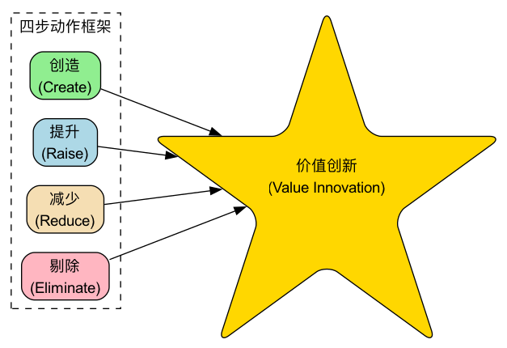

蓝海战略¶
在商业世界中，绝大多数企业都在一片“红海”中厮杀。红海代表了所有当前已知的市场空间，在这里，行业边界清晰，游戏规则明确，企业试图通过击败对手来抢夺更多有限的市场份额。随着竞争者越来越多，市场变得异常拥挤，利润和增长的空间日益萎缩，这片海洋也因激烈的竞争而被“染成”红色。蓝海战略（Blue Ocean Strategy） 则提供了一条截然不同的路径，它不主张与对手在红海中进行血腥的正面竞争，而是致力于开创全新的、无人竞争的“蓝海”市场空间，从而将竞争变得无关紧要。
蓝海战略的核心，并非技术创新本身，而是一种名为价值创新（Value Innovation）的战略逻辑。价值创新是企业在追求差异化和追求低成本这两个看似矛盾的目标上，实现“鱼与熊掌兼得”的交集点。它不是在现有的价值与成本之间做权衡取舍，而是通过打破这种权衡，同时为客户和企业自身创造价值的飞跃。通过重构行业元素，蓝海战略旨在为客户提供一种全新的、与众不同的价值，从而开启一个前所未有的广阔市场。
要点速览
- 核心逻辑是价值创新：同时追求差异化和低成本，而不是二选一。
- 两个核心工具：战略布局图（看清行业在比拼什么）+ 四步动作框架（剔除、减少、增加、创造）。
- 到哪里找蓝海：六条路径（跨行业、跨战略集团、跨买方链等）和三类非顾客。
- 好战略的三个特征：聚焦、差异、有一句让人记住的口号。
- 提醒：蓝海会被模仿而变红，价值创新需要持续进行。
红海战略与蓝海战略的区别¶
| 红海战略 | 蓝海战略 |
|---|---|
| 在已有的市场空间中竞争 | 开创无人争抢的市场空间 |
| 打败竞争对手 | 让竞争变得无关紧要 |
| 争夺现有需求 | 创造和获取新需求 |
| 在价值与成本之间做取舍 | 打破价值与成本之间的取舍 |
| 选择差异化或低成本，整个公司围绕这一选择运转 | 同时追求差异化和低成本，整个公司围绕这一目标运转 |
蓝海战略的核心分析工具¶
蓝海战略提供了一套系统性的分析工具，帮助企业系统性地思考如何摆脱红海，开创蓝海。
-
战略布局图（Strategy Canvas）
这是一个强大的诊断和行动框架。它通过一张图，直观地描绘出在一个已知市场空间内，所有竞争者都在哪些竞争要素上进行投入，以及客户从中获得了什么。横轴列出行业内竞争和投资的关键要素，纵轴则反映了在各个要素上，企业给予客户的水平高低。通过绘制竞争对手和自己的“价值曲线”，企业可以清晰地看到行业的竞争格局以及自己的战略轮廓。如果你的价值曲线和对手几乎重合，说明你正身处红海。
-
四步动作框架（The Four Actions Framework）
这是打破“差异化-成本”权衡、重构价值曲线的核心思考工具。它通过提出四个关键问题，来挑战一个行业长期以来根深蒂固的战略逻辑和商业模式：
- 剔除（Eliminate）：行业中哪些被认为理所当然的要素应该被剔除？
- 减少（Reduce）：哪些要素应该被减少到行业标准以下？
- 增加（Raise）：哪些要素应该被增加到行业标准以上？
- 创造（Create）：哪些行业从未提供过的要素应该被创造出来？
其中，“剔除”和“减少”帮助企业降低成本结构；“增加”和“创造”则旨在提升客户价值，创造新的需求。

-
六条路径框架（Six Paths Framework）
蓝海很少凭空出现，它往往藏在行业习以为常的边界之外。六条路径给出了系统寻找蓝海的六个方向：
- 跨越替代性行业：看看客户在别的行业里是如何满足同一需求的。
- 跨越行业内的战略集团：看看高端和低端两个阵营各自有哪些让客户愿意买单的东西。
- 跨越买方链：把目标从“付钱的人”转向“使用的人”或“影响决策的人”。
- 跨越互补性产品和服务：看看客户在使用产品前后还需要什么。
- 跨越功能导向与情感导向：功能导向的行业可以加入情感价值，反之亦然。
- 跨越时间：看看正在发生的长期趋势，会如何改变客户价值。
-
三类非顾客（Three Tiers of Noncustomers）
红海企业盯着现有顾客，蓝海企业关注“非顾客”：
- 第一类：准非顾客，就在市场边缘，勉强在用、随时准备离开。
- 第二类：拒绝型非顾客，考虑过你的行业，但有意识地选择了不用。
- 第三类：未探索型非顾客，从来没有被这个行业当作潜在顾客考虑过。
找出三类非顾客的共同点，往往就能发现一个规模远大于现有市场的新需求。
如何开创一片蓝海¶
-
审视当前竞争格局
绘制出你所在行业的战略布局图。清晰地列出当前行业竞争的主要元素，并客观地评估主要竞争对手和你自己在这些元素上的投入水平，形成各自的价值曲线。
-
运用四步动作框架挑战现状
系统性地运用“剔除-减少-增加-创造”框架，对行业现有的竞争要素和客户价值进行解构和重构。在这一步，关键在于要敢于挑战行业内那些“不言而喻”的规则和假设。可以结合六条路径和三类非顾客寻找灵感。
-
构建新的价值曲线
基于四步动作框架的洞察，构建一条全新的、与众不同的价值曲线。一条有效的蓝海战略价值曲线通常具有三个鲜明特征： - 聚焦（Focus）：战略清晰地聚焦于少数几个核心要素。 - 差异（Divergence）：价值曲线的形态与行业内的其他竞争者截然不同。 - 清晰的宣传口号（Compelling Tagline）：能够用简单、有力的语言向市场传递其独特的价值主张。
-
将蓝海创意商业化
确保你的蓝海创意能够转化为一个可行的、盈利的商业模式。按书中建议的顺序检验：买方效用（客户是否真的觉得有价值）→ 价格（大众买得起吗）→ 成本（在这个价格下能盈利吗）→ 推广（内外部的阻力能否克服）。
蓝海战略模板¶
一、战略布局图数据表
先列出行业竞争的关键要素，再给自己和主要竞争对手在每个要素上打分（1~5 分），把每一行连成线，就是各自的价值曲线。
| 竞争要素 | 竞争对手 A | 竞争对手 B | 我们（现状） | 我们（蓝海方案） |
|---|---|---|---|---|
| 价格 | ||||
| 要素 2 | ||||
| 要素 3 | ||||
| …… | ||||
| 新创造的要素 | 0 | 0 | 0 |
二、ERRC 方格（剔除-减少-增加-创造）
| 剔除（Eliminate） | 增加（Raise） |
|---|---|
| 行业里有哪些要素，客户其实并不在乎？ | 哪些要素是客户真正在意、但行业做得不够的？ |
| 减少（Reduce） | 创造（Create） |
| 哪些要素被行业过度投入了？ | 有哪些客户需要、但行业从未提供过的东西？ |
填完后检查：“剔除”和“减少”省下的成本，是否足以支撑“增加”和“创造”带来的投入？如果四个格子里只有右边有内容，那只是差异化，不是价值创新。
经典应用案例¶
案例一：太阳马戏团（Cirque du Soleil）
- 背景：传统马戏团行业（红海）面临着观众老化、动物保护主义兴起、娱乐方式多样化等多重压力，日益衰落。
- 蓝海战略：太阳马戏团没有在传统马戏的框架内竞争，而是通过价值创新开创了全新的市场。
- 剔除：动物表演、明星表演者、三环马戏棚等高成本元素。
- 减少：过道小贩的叫卖和一些低俗的幽默。
- 增加：单一主题的独特性、场地的舒适度和艺术感。
- 创造：融合了戏剧、舞蹈、音乐和马戏艺术的全新叙事性表演形式。
- 结果：太阳马戏团创造了一个全新的市场，吸引了那些通常会去欣赏歌剧、芭蕾舞的成年观众。剔除动物和明星大幅降低了成本，新的艺术体验又支撑起远高于传统马戏的票价，实现了差异化和低成本的统一。
案例二：任天堂Wii游戏机
- 背景：在21世纪初的游戏机市场，索尼（PlayStation）和微软（Xbox）在图形处理能力、运算速度和游戏复杂性上进行着激烈的“军备竞赛”。
- 蓝海战略：任天堂没有加入这场红海竞争，而是另辟蹊径。
- 剔除/减少：对顶级高清画质和运算速度的追求，以及复杂的手柄设计。
- 增加/创造：创造了全新的、基于体感和动作捕捉的直观游戏方式，以及简单、易于上手的控制器。它强调的是家庭同乐、全身运动的社交乐趣。
- 结果：Wii吸引了大量此前从不玩游戏的“第三类非顾客”，包括儿童、女性和老年人，成为当时销量最高的家用游戏机之一。
案例三：Yellow Tail（黄尾袋鼠）葡萄酒
- 背景：美国葡萄酒市场被两大阵营瓜分：一端是廉价的佐餐酒，品质不高；另一端是昂贵、复杂的精品葡萄酒，其复杂的术语和品鉴规则让普通消费者望而生畏。
- 蓝海战略：黄尾袋鼠的目标是创造一款让普通人也能轻松享受的、有趣、不复杂的葡萄酒。
- 剔除/减少：复杂的酿酒术语、陈年潜力、橡木桶风味等让人生畏的传统葡萄酒营销元素。
- 增加/创造：创造了简单易饮的果味口感、易于识别的包装（袋鼠标志）、以及在普通超市就能轻松购买的便利性。
- 结果：黄尾袋鼠迅速成为美国最畅销的进口葡萄酒品牌之一，它吸引的是那些通常喝啤酒或鸡尾酒的消费者，成功地将“非葡萄酒消费者”转化为了自己的顾客。
案例四：经济型连锁酒店
- 背景：过去国内住宿市场两极分化：一边是价格高、设施全的星级酒店，一边是价格低但卫生和安全难以保证的招待所、小旅馆。大量出差和出游人群夹在中间。
- 蓝海战略：
- 剔除：豪华大堂、康体娱乐设施、宴会和多餐厅配置。
- 减少：客房面积、前台以外的人工服务、装修的奢华程度。
- 增加：床品和卫生间的标准化品质、交通便利的选址、连锁带来的品质一致性。
- 创造：会员体系与统一的线上预订渠道，让住客在任何城市都能预期到同样的体验。
- 结果：经济型连锁酒店用远低于星级酒店的价格，提供了住客最在乎的“干净、安全、睡得好”，迅速扩张为一个规模庞大的新品类。随后大量模仿者进入，这片蓝海也逐渐变红，品牌又开始向中端酒店寻找新的价值曲线。
常见误区¶
- 把蓝海等同于技术创新。很多蓝海并不依赖新技术，太阳马戏团和黄尾袋鼠都是如此。关键是重新定义客户价值，而不是做出更先进的产品。
- 只做加法。只想着“增加”和“创造”，成本会一路上升，最后得到的是一个更贵的差异化产品，而不是价值创新。真正的蓝海一定有大胆的“剔除”和“减少”。
- 把细分市场当成蓝海。在现有市场里切出一块更细的人群继续竞争，仍然是红海思维。蓝海战略更关心的是把非顾客变成顾客，扩大市场边界。
- 只盯着现有顾客做调研。现有顾客往往只会要求“同样的东西再好一点、便宜一点”。新需求更可能藏在三类非顾客身上。
- 画完图就结束。战略布局图和 ERRC 方格只是思考工具。没有经过买方效用、价格、成本、推广的商业化检验，蓝海创意很可能停留在纸面上。
- 以为蓝海会永远是蓝的。成功的蓝海一定会吸引模仿者。企业需要持续监测自己的价值曲线是否正在与模仿者趋同。
蓝海战略的价值与挑战¶
核心价值
- 摆脱零和博弈：通过创造新需求，企业可以获得一段时期内没有直接竞争的快速增长。
- 重塑行业边界：成功的蓝海战略能够改变一个行业的竞争规则，甚至创造一个全新的行业。
- 建立强大品牌：作为新市场的开创者，容易建立起强大的品牌认知和客户忠诚度。
潜在挑战
- 执行难度高：需要深刻的洞察力、非凡的创造力和敢于挑战行业传统的勇气。
- 组织层面的阻力：实施蓝海战略往往需要对公司现有的运营、文化和思维模式进行重大调整，可能会遇到内部阻力。
- 蓝海可能变红：任何成功的蓝海，最终都会吸引模仿者和追随者，导致蓝海逐渐变红。因此，企业需要有持续进行价值创新的能力。
- 事后解释容易，事前判断难：很多案例是在成功之后才被归纳为蓝海战略，事前很难确定某个方向一定是蓝海。
常见问题¶
蓝海战略和差异化战略有什么区别？
差异化战略接受“更高价值必然意味着更高成本”，选择用溢价覆盖成本。蓝海战略试图打破这个取舍，通过剔除和减少行业里过度投入的要素来降低成本，同时在客户真正在意的地方做加法，实现差异化和低成本兼得。
中小企业适合用蓝海战略吗？
适合，而且往往更需要。中小企业很难在资源上与大企业正面竞争，重新定义客户价值是少有的能以小博大的方式。四步动作框架和非顾客分析几乎不需要额外成本。
蓝海战略和颠覆性创新是一回事吗？
不是。颠覆性创新通常从低端市场或新的立足点切入，用更简单、更便宜的方案逐步取代领先者。蓝海战略不局限于低端，可以发生在任何价格层面，重点是通过价值创新开创新需求。
怎么判断自己是不是身处红海？
画出战略布局图：如果你和主要竞争对手的价值曲线几乎重合，大家都在同样的要素上比拼投入多少，而价格成为主要竞争手段，那基本就是红海。
蓝海战略和波特五力模型矛盾吗？
不矛盾，视角不同。五力模型帮助企业理解现有行业结构、在其中找到有利位置；蓝海战略则尝试改变行业边界本身。实践中常先用五力模型看清红海，再用蓝海工具寻找出路。
延伸与关联¶
- 商业模式画布：是设计和规划如何将蓝海战略创意转化为一个可行的、盈利的商业模式的绝佳工具。
- 精益画布：适合在不确定性很高的阶段，快速记录和验证一个蓝海创意的关键假设。
- 波特五力模型：用来分析你正身处的红海有多“红”，以及利润被哪些力量拿走了。
- 设计思维：深入理解非顾客的需求，是发现蓝海的起点；设计思维提供了一套以人为中心的探索方法。
- 颠覆性创新（Disruptive Innovation）：与蓝海战略相关但有所不同。颠覆性创新通常指通过提供更简单、更便宜的方案，从市场的低端或新的立足点切入，并最终颠覆现有市场领导者。而蓝海战略则不局限于此，它可以发生在任何市场层面。
来源参考：W. 钱·金（W. Chan Kim）和勒妮·莫博涅（Renée Mauborgne）的开创性著作《蓝海战略：超越产业竞争，开创全新市场》（Blue Ocean Strategy）是该理论的奠基之作，书中包含了大量的案例和详细的分析框架。两位作者后续的《蓝海转型》（Blue Ocean Shift）则进一步给出了组织落地蓝海战略的步骤。